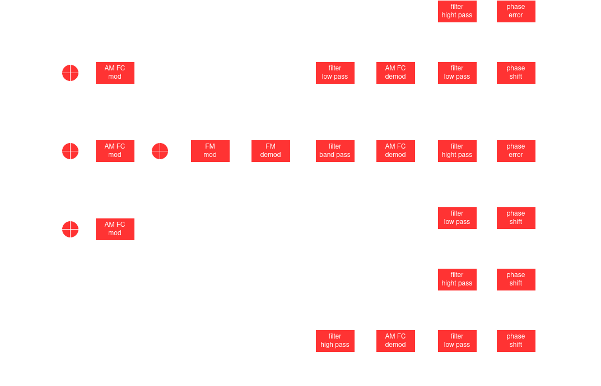

Mistakes I made in my TV signal transmission.
Proper handling lipsync.
My solution for lip-sync designed in this project wasn't correct. But I came to think a proper solution. In the project, I used a signal of known-fixed frequency (called sync carrier, because it reminds me to how suppress carrier AM modulation is done) and send it with the others. My idea was to demux this signal, measure its desphase with a phase to DC voltage conversion circuit. This phase error then was used to do phase shifting in the others signals (video and audio) for correction. This didn't work. Why?, because it actually does not have information about how much phase error audio and video have, it just has information about how that particular signal changes it phase during transmission. The proper solution is then, instead, to sum a unique signal of know-fixed frequency at the very start of modulation stage for every signal that must be synchronized; even before multiplexing and FM transmission. Then in the receptor to extract those unique signals and perform phase error measurement and phase shift is done as before. In this case, each unique signal has information of all distortions suffered for the desired signals through all stages until demodulation. This is a possible architecture I came with fast thinking:

Better circuit and PCB designs.
I remember I was short in time while designing FM transmitter and PCB so I left some errors. FM modulator wasn't at the correct central frequency. PCB weren't properly characterized to know if trays were creating parasitic antennas among others issues and I didn't knew how to design a proper phase error measurement. So, if I could do this project again, I'll try to put emphasis in this bad designs.